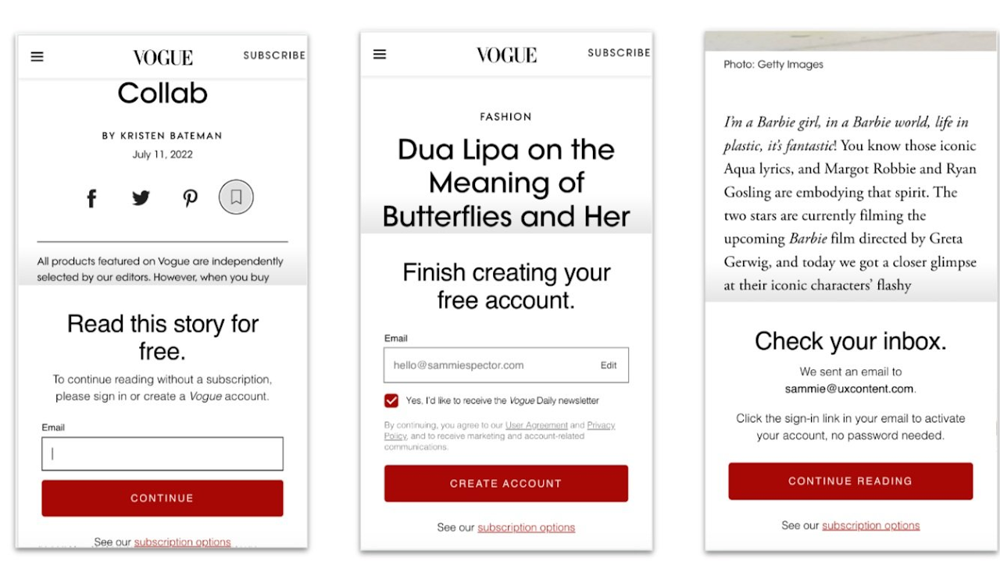
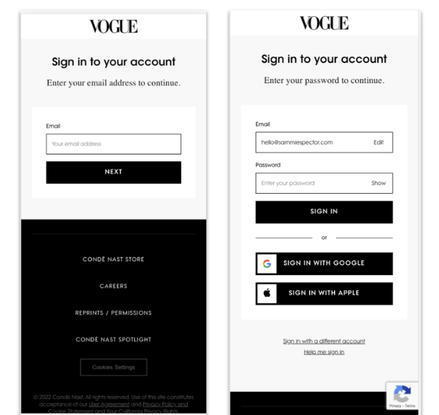
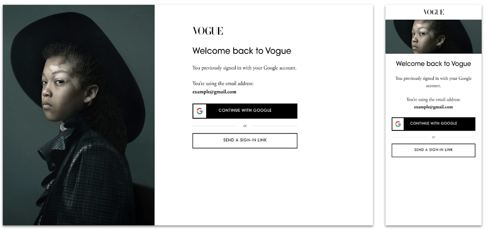
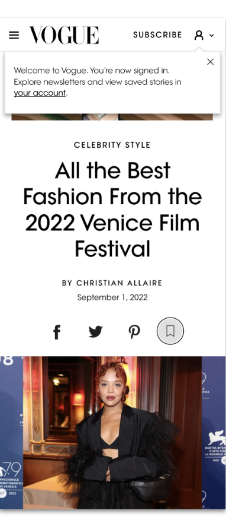

Case Study — Condé Nast
Global Accounts
Across Condé Nast brands — including Vogue, Bon Appétit, The New Yorker, and more — accounts are the foundation for building relationships with readers. They lead to paid subscriptions, memberships, and return engagement. My team redesigned the end-to-end sign-in flow to encourage more users to create accounts and increase validated sign-ins.
Challenge
The current sign-in flow that connects all Condé Nast brands was in need of improvement:
- Only 25% of users who started registration completed the email verification step and successfully authenticated their account.
- The current flow was not GDPR compliant, so it could not be rolled out to international markets.
- The flow was inconsistent across the site and included a number of dead ends.
- Users were jolted out of the brand's unique reading experience into a grey, brandless series of screens that felt confusing at best and untrustworthy at worst.

Our challenge was to redesign the entire end-to-end experience to guide users through authentication and increase total registrations — making the experience as painless and compelling as possible.
The extra challenge: We needed to make one experience work for 10+ recognizable brands with their own sites, styles, and voice and tone.

Approach
We broke the project into three discrete workstreams to tackle in tandem: the registration gate, the sign-in flow, and re-entry (landing back on the brand's site).
We created guiding principles to ensure design rationale always laddered up to the vision:
- Consistent. All users enter and exit through the same core flow no matter their entry point.
- Simplified. We remove extraneous flows and tweak UX and language based on current insights.
- Contextual. We craft a seamless sign-in experience that maintains the brand feel and keeps users on the same journey.
We activated a steering committee across Consumer Marketing, Legal, and Editorial Creative, and generated two rounds of user research to better understand reader pain points and what might entice them to create an account.
Design Rationale
For the registration gate, we updated confusing barrier logic and fixed language inconsistencies between "subscribe" and "register" — completing a full text audit to ensure consistency across the experience.
For the sign-in journey, we deprecated passwords in favour of SSO (Google, Apple) as the fastest path. We crafted a new flexible styling format that incorporated unique brand identities — imagery, fonts, and colours — so users never felt like they were leaving the site they were trying to access.
To scale for new markets, we worked with Legal to add international marketing permissions and legal disclaimer needs.

Outcome
Vogue was the first to test and roll out the new UX. After introducing the new experience in 2021, we saw encouraging results immediately.
